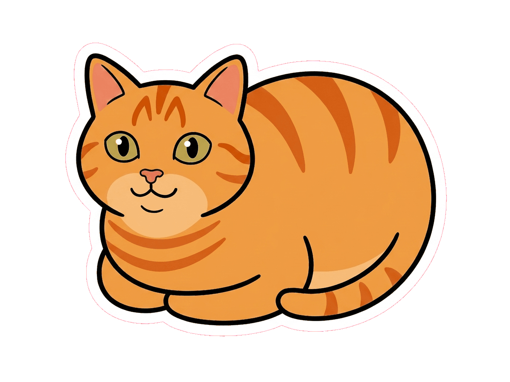
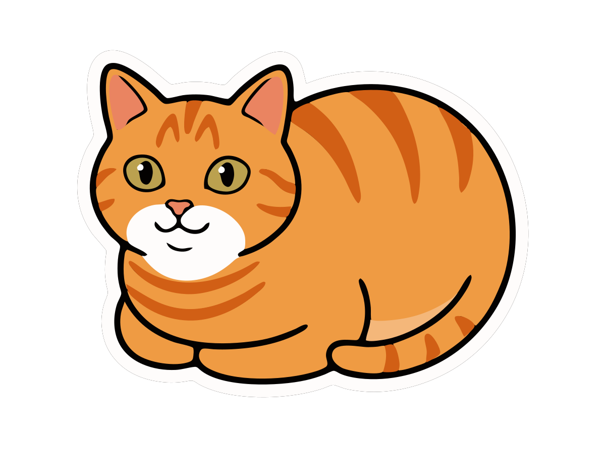
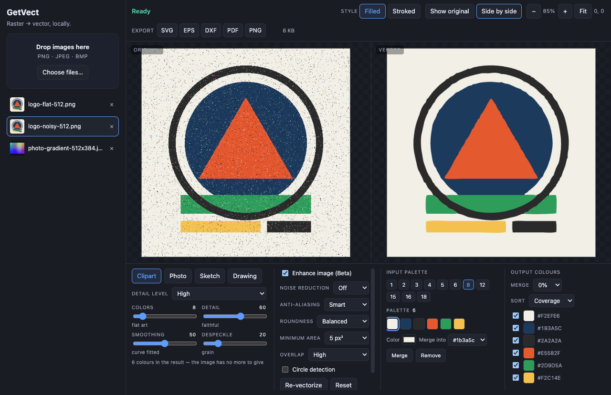

Drag, drop, or pick
PNG, JPEG and BMP, by drag-and-drop or file picker. Unsupported files are rejected with a real message. Load several and switch between them in the sidebar.

Drop in a PNG, JPEG or BMP. Get back SVG, EPS, DXF, PDF or PNG — traced by an
offline engine, with a full control surface for palette, detail, smoothing and
speck removal, and saved through the native dialog. Tracing, preview and export
make no network calls at all. There are exactly two network touchpoints, both in
your control: optional AI Enhance, and a once-per-launch
update check against GitHub Releases (disable with
GETVECT_NO_UPDATE_CHECK=1).

Frankie is the maintainer's cat; the mascot artwork was generated with an image model from a photo of him, then hand-corrected for coat colour and markings.
Before / after
Same cat, twice. On the left, the source PNG — real pixels, and at 16× they are all you get. On the right, the SVG GetVect traced from it: curve-fitted outlines that stay sharp at any magnification. Drag the divider, change the zoom, then drag the picture itself to go looking somewhere else.


This trace is the local engine alone. AI Enhance was off, nothing was uploaded, and no model touched the image before or after it.
Frankie is both the mascot and the demo fixture. Traced at 8 colours with Smart anti-aliasing, his 568 KB raster becomes a 17 KB SVG in 7 colour layers and 42 shapes, with the transparent background preserved. Frankie is our own artwork, so he is shown here and gates nothing — a picture we drew cannot tell an improvement from a change tuned to it. The bars live on public-domain artwork nobody here drew and fixtures generated from equations, measured on every run.
Being honest about the fixture: flat, sticker-style art like Frankie is favourable input
for a tracer — hard edges, few colours, nothing to guess at. That is why the acceptance
fixtures do not stop there. logo-noisy, photo-gradient and
spikes-bands are in the same suite specifically because they are noisy,
photographic and synthetically adversarial, and they are measured on every run alongside
the easy one.
What it does
Each of these has an acceptance spec behind it — one Playwright test per item in the project's reference checklist, run against the packaged app.
PNG, JPEG and BMP, by drag-and-drop or file picker. Unsupported files are rejected with a real message. Load several and switch between them in the sidebar.
Clipart with seven detail levels, Photo, Sketch (grayscale) and Drawing (black and white with a luminance threshold). Tracing starts on load, off the UI thread, with visible progress.
Auto-generated palettes at eleven fixed sizes from 1 to 18 colours, offered as selectable rows — plus an editor that recolours a swatch, merges two, or removes one.
Every output colour group has a toggle: disable the background colour and the export comes back transparent. Merge threshold and sort order sit beside it.
Enhance (denoise and colour simplification), Noise Reduction off/low/high, and Anti-aliasing off/smart/mid. Smart is a pre-trace edge cleanup and it is worth 1747 sub-paths → 551 and 396 KB → 140 KB on the reference artwork.
Three curve-fitting levels, speck removal at 0 / 5 / 90 px², layer overlap, and circle detection. Results render as filled layers or stroked layers.
Original/vector toggle and side-by-side, with zoom and pan synchronised across both panes. What you are looking at is the SVG that gets exported, not a re-render of it.
SVG with per-colour <g fill> layers that open in Illustrator or
Inkscape as editable colour groups. DXF keeps its curves as degree-3 splines — or
flattens to R12 polylines for older cutter firmware. Plus EPS, PDF and PNG.

AI Enhance — optional, bring your own key
The "enhance with AI" toggle on the web vectorizer we benchmark against turned out not to be a filter at all. It is a generative image-to-image re-illustration — background removed, soft shading flattened into bands, outlines redrawn at even weight — after which their tracer is tracing art that is already flat. That is most of its advantage on shaded artwork, and no amount of median filtering reproduces it.
GetVect can do the same step by asking an image model for it. Paste your own Google Gemini API key, switch AI Enhance on, and the enhanced image becomes the working image the engine traces. One call, about eight seconds on a 1024 px source.
With AI Enhance on, that image is uploaded to Google under your own API key and their terms — which is exactly the thing the rest of this app exists to avoid. Nothing else changes: no other image, no other feature, no telemetry, and the switch is off until you turn it on.
The key is encrypted at rest with Electron's safeStorage (Keychain on
macOS), lives only in the main process and is never returned to the UI. If the OS has
no keystore, GetVect refuses to store a key rather than writing it in the clear. If a
run fails — bad key, no network, 60 s timeout — the un-enhanced image is traced
instead and the app says why.
The fully-local version — background removal, then an on-device generative flatten, with nothing leaving the machine — is the plan of record in issue #1. The provider layer was written for it. Setup, quality tiers and the debug switch are in the docs.
Download
macOS on Apple Silicon (M1 and later) and Windows on x64. Both come out of the same
tag, built and checked by the same workflow, and both carry the engine contract tests
that ran before they were packaged. Intel Macs and Linux are buildable from source
(npm run dist) but are not tested and are not published, so they are not
offered here as if they were.
There is no Apple Developer ID certificate behind this build yet, so macOS quarantines it on download and will tell you it "cannot be opened". Nothing is wrong with the file — an unsigned app is simply one nobody has paid Apple to vouch for.
On macOS, Homebrew avoids the whole conversation:
brew install craigjmidwinter/tap/getvect
That is a formula rather than a cask: it builds from source on your machine, so nothing arrives as a downloaded application bundle, nothing gets quarantined and Gatekeeper never prompts. Budget a few minutes for the build. It does not sign the app — GetVect is still unsigned and un-notarized, and the download below still hits the wall above. It sidesteps quarantine; it does not replace a certificate.
If you would rather not use Homebrew, take the download and get past it either by right-clicking GetVect in Applications and choosing Open, then Open again in the dialog — or in Terminal:
xattr -dr com.apple.quarantine /Applications/GetVect.app
Windows has its own version of the same conversation: SmartScreen says "Windows protected your PC" because there is no Authenticode certificate either. Choose More info, then Run anyway. The installer is per-user and never asks for administrator rights — an unsigned installer demanding admin is exactly the shape of the thing you are told not to run.
The same missing certificate is why GetVect tells you about a new version instead of installing one: macOS refuses to let an unsigned app update itself in place, and an updater that downloaded 150 MB and then failed would be worse than no updater at all. When the certificate lands, the in-app updater is already written and switches on.
Two network touchpoints, both in your control: optional
AI Enhance, and a once-per-launch update check against GitHub
Releases (disable with GETVECT_NO_UPDATE_CHECK=1). The check asks one
question, sends no identifier, and fails silently when you are offline. Everything
else — ingest, tracing, preview and every export — never leaves the machine.
How it was built
GetVect was written almost entirely by a multi-agent loop where three roles take turns on one repo. Builders implement a slice at a time. Critics start with fresh context, read only the spec and the running app, and score it. And a pit crew does nothing but build measurement. The bet under test: a loop's speed limit is measurement, not intelligence.
The biggest correction came from refusing to grade against adjectives. "As good as the web tools" doesn't fail CI — so the spec got rebuilt around what the controls actually are, model presets and candidate palettes rather than the sliders we had guessed, and that surfaced the finding the engine now revolves around: Smart anti-aliasing collapses path count by ~81% at otherwise identical settings — 637 to 63 on the fox, and 758 to 41 on Frankie, measured 2026-08-04 when the finding landed.
For a whole lap the instruments fed the engine a white-flattened image no UI could produce, while the app's own decode handed it black for transparent pixels. Every transparent-background PNG — the entire sticker and decal use case — traced an invented opaque background and scored green. A number measured on pixels the product never sees is not a measurement of the product. There is now a decode-parity spec whose only job is to go red the moment the app and the harness disagree.